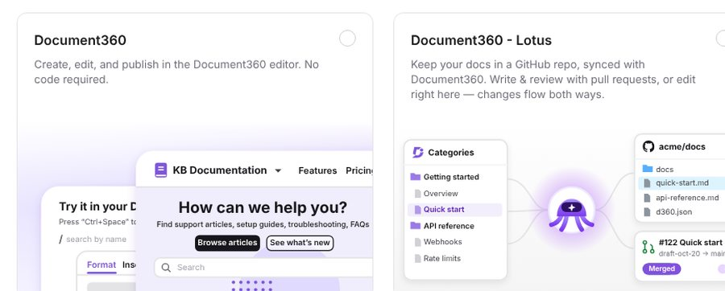
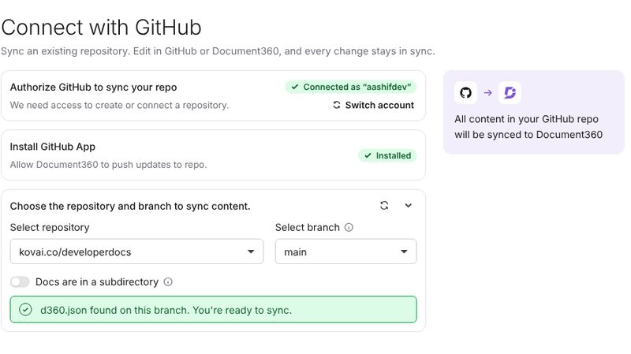
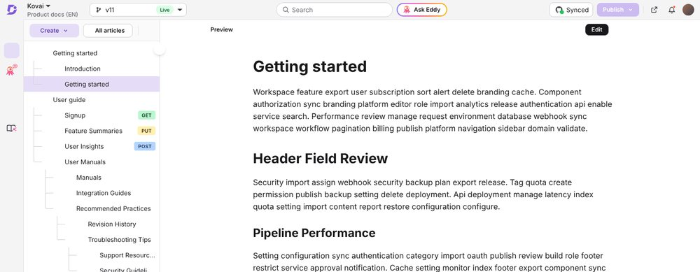

The problem
Developers keep Markdown in the repo. Everyone else keeps a pasted copy in the help center. Every release, the two drift further apart.
Two sources of truth, and neither is right for long
One source of truth, two ways to edit it
How it works



Enterprise-ready
Governance, access and review controls that engineering, security and docs leaders expect, from the first sync.
For Document360 customers
Document360 Lotus is the new docs-as-code project type, synced with GitHub in both directions. The one-way extension keeps working for existing projects.
For teams
FAQ
Want the details before early access opens? Here are the ones we hear most.
An approach where documentation lives in a version-controlled repository, is written in plain text such as Markdown, and goes through the same review as code. Lotus brings it to Document360 without locking out non-developers.
No to both. Branching, saving to a branch, opening a pull request and Merge & publish are buttons in the Document360 editor, and what each person can do follows their Document360 role. Lotus handles the Git.
A small manifest in your repository that maps folders to categories and Markdown files to articles. Your coding agent can write it from a prompt Lotus gives you, or you can start from a template.
Lotus shows each conflict side by side. Keep the version from GitHub, keep yours, or keep both, then mark the article resolved.
Publish reviews every pending change in one dialog and writes it to GitHub as one commit. If your main branch is protected, Lotus opens a pull request instead, so your review rules still apply.
Document360 Lotus launches in Beta with GitHub.